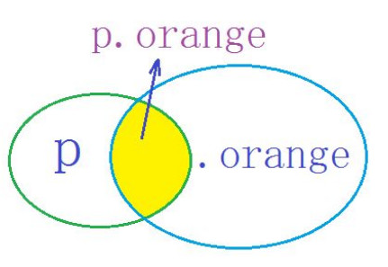

关系选择器和选择器列表（Combinators and selector lists）
一次使用一个选择器很有用，但在某些情况下可能效率低下。 当您开始组合它们来执行精细选择时，CSS选择器变得更加有用。
CSS有几种方法可以根据它们彼此之间的关系来选择元素。 这些关系用关系选择器表示如下（A和B代表前文所述的任何选择器）所有的关系选择器都是选择后面的B：
名称 | 语法 | 选择 |
交集选择器 | AB | |
选择器列表（Selector list） | A,B | 匹配满足A或B的任意元素（选择器组不能看作是关系选择器） |
后代选择器（Descendant combinator） | A B | 匹配满足B的任意元素，条件：B是A的后代结点（B是A的子节点，或者A的子节点的子节点） |
子选择器（Child combinator） | A>B | 匹配满足B的任意元素，条件：B是A的直接子节点 |
相邻兄弟选择器（Adjacent sibling combinator） | A+B | 匹配满足B的任意元素，条件：B是A的下一个兄弟节点（AB有相同的父节点，并且B紧跟在A的后面） |
通用兄弟选择器（General sibling combinator） | A~B | 匹配B元素，条件：B是A之后的兄弟节点中的任意一个（AB有相同的父节点，B在A之后，但不一定紧跟着A） |
交集选择器
给所有选择器选中的标签中, 相交的那部分标签设置属性。
格式: 选择器1选择器2...{ 属性:值; }
交集选择器没有结合符合空格。所以div.aa与div .aa不是一个意思。
例如：交集选择器p.orange

CSS：
p.para1 {
color: red;
}
HTML：
<p>我是段落</p>
<p>我是段落</p>
<p class="para1">我是段落</p>
<p class="para1">我是段落</p>
<p>我是段落</p>
效果图：

并集选择器（选择器组、多重选择器）
给所有选择器选中的标签设置属性
格式: 选择器1,选择器2,...{ 属性:值; }
注意点: (1),选择器之间利用逗号,连接 (2),选择器可以是标签名称,也可以是id、class名称
选择器组：
您可以编写以逗号分隔的选择器组，以将同一规则同时应用于多个选定的元素。


还有
CSS两个类之间没有空格时，表示元素要包括这两个类才有效！例如：
.example.para
后代选择器:又称为包含选择器，选择作为某元素后代的元素。
A B 读作:作为A元素的后代是B元素。。。。。。（B元素怎样怎样），后代包括孙子、重孙等等。


当然，您也可以在 h1 中找到的每个 em 元素上放一个 class 属性，但是显然，后代选择器的效率更高。
容易忽视的：

CSS：
div.sidebar { background: blue; }
div.maincontent { background: white; }
div.sidebar a:link { color: white; }
div.maincontent a:link { color: blue; }
HTML：
<ul>
<li>List item 1
<ol>
<li>List item 1-1</li>
<li>List item 1-2</li>
<li>List item 1-3
<ol>
<li>List item 1-3-1</li>
<li>List item <em>1-3-2</em></li>
<li>List item 1-3-3</li>
</ol>
</li>
<li>List item 1-4</li>
</ol>
</li>
<li>List item 2</li>
<li>List item 3</li>
</ul>
效果图：

子选择器：
A>B 读作: 作为A元素的所有子元素B。。。。。。（B元素怎样怎样），只包括所有儿子。
子结合符即大于号（>），子结合符前后可以有空白符，只要你愿意：空白符可以有或者忽略。
如果不希望选择任意的后代元素，而是希望缩小范围，使用子元素选择器（Child selector）只选择某个元素的子元素。
例如，如果希望选择只作为 h1 元素子元素的 strong 元素，可以这样写：
CSS：
h1 > strong {color:red;}
HTML：
<h1>This is <strong>very</strong> <strong>very</strong> important.</h1>
<h1>This is <em>really <strong>very</strong></em> important.</h1>
第一个 h1 下面的两个 strong 元素变为红色，但是第二个 h1 中的 strong 不受影响。因为第二个 h1 中的 strong（嵌套在<em>里）是孙子（a child of a child）了。
效果图：


相邻兄弟选择器
选择紧接在另一元素后的元素，且二者有相同父元素。
一个结合符“+”只能选择两个相邻兄弟中的第二个元素，两个结合符只能选择三个相邻兄弟中的第三个元素，以此类推。
A+B 读作: 选择紧接在A元素后出现的单个第一个兄弟B元素，A 元素和 B 元素拥有共同的父元素。
A:first-of-type + A 读作：选择紧跟在A元素身后的第一个兄弟A元素。
A+A 读作:选择紧跟在A元素身后的第n个兄弟A元素和后面所有的A元素。（当两个兄弟元素相同时，会一次循环查找。）

li.active是序号为2的球。


图2-20


主动学习：
1. 设计链接的样式，但是只针对ul无序列表中的链接有效；
2. 设计ul列表里的链接样式，但是只当鼠标停留在上面时有效；
3. 设计只紧接着最大标题下的段落样式。
HTML：
<ul>
<li><a href="#">Home</a></li>
<li><a href="#">Portfolio</a></li>
<li><a href="#">About</a></li>
</ul>
<h1>Welcome to my website</h1>
<p>Hello, and welcome! I hope you enjoy your time here.</p>
<h2>My philosophy</h2>
<p>I am a believer in chilling out, and not getting grumpy. I think everyone else should follow this ideal, and <a href="#">drink green tea</a>.</p>
CSS：
ul {
padding: 0;
list-style-type: none;
}
ul a{
text-decoration: none;
display: block;
color: black;
background-color: red;
padding: 5px;
margin-bottom: 10px;
}
ul a:hover{
color: red;
background-color: black;
}
h1 + p{
font-style: bold;
color: blue;
}
效果图：


通用兄弟选择器
A~B：选择A元素后面（不一定是紧跟）的所有同类型的兄弟B元素，A 元素和 B 元素拥有共同的父元素。适用于 IE7 以上版本。
CSS：
p ~ span {
color: red;
}
HTML：
<span>This is not red.</span>
<p>Here is a paragraph.</p>
<code>Here is some code.</code>
<span>And here is a red span!</span>
<code>More code...</code>
<span>And this is a red span!</span>
效果图：